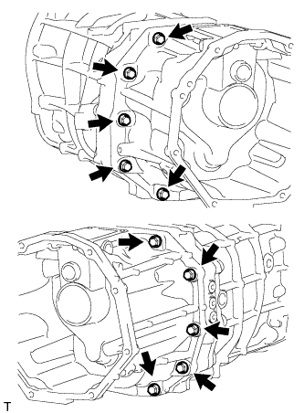
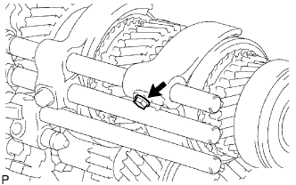
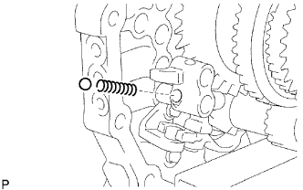
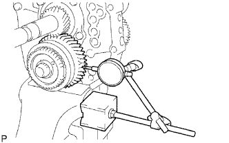
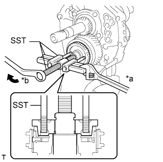

БЛОК МЕХАНИЧЕСКОЙ ТРАНСМИССИИ > РАЗБОРКА |
| 1. СНИМИТЕ ПРОБКУ НАЛИВНОГО ОТВЕРСТИЯ МЕХАНИЧЕСКОЙ ТРАНСМИССИИ |
Снимите пробку наливного отверстия и прокладку с картера механической трансмиссии.
| 2. СНИМИТЕ ПРОБКУ СЛИВНОГО ОТВЕРСТИЯ |
 |
Снимите пробку сливного отверстия и прокладку с картера механической трансмиссии.
| 3. СНИМИТЕ ВИЛКУ ВЫКЛЮЧЕНИЯ СЦЕПЛЕНИЯ В СБОРЕ |
Снимите вилку выключения сцепления и подшипник выключения сцепления с картера сцепления.
| 4. СНИМИТЕ ПОДШИПНИК ВЫКЛЮЧЕНИЯ СЦЕПЛЕНИЯ В СБОРЕ |
 |
Снимите фиксатор и подшипник выключения сцепления с вилки выключения сцепления.
| 5. СНИМИТЕ ОПОРУ ВИЛКИ ВЫКЛЮЧЕНИЯ СЦЕПЛЕНИЯ |
Снимите опору вилки выключения сцепления с картера сцепления.
| 6. СНИМИТЕ ЧЕХОЛ ВИЛКИ ВЫКЛЮЧЕНИЯ СЦЕПЛЕНИЯ |
Снимите чехол вилки выключения сцепления с картера сцепления.
| 7. СНИМИТЕ КАРТЕР СЦЕПЛЕНИЯ |
Выверните 9 болтов.
С помощью молотка с пластмассовым покрытием выбейте картер сцепления из картера механической трансмиссии.
| 8. СНИМИТЕ ВЫКЛЮЧАТЕЛЬ СВЕТА ЗАДНЕГО ХОДА В СБОРЕ |
С помощью SST снимите выключатель света заднего хода и прокладку с картера механической трансмиссии.
| 9. СНИМИТЕ ШТИФТ БЛОКИРОВКИ |
Снимите 2 штифта блокировки с переходника раздаточной коробки.
| 10. СНИМИТЕ ДЕРЖАТЕЛЬ НАПОЛЬНОГО РЫЧАГА ПЕРЕКЛЮЧЕНИЯ ПЕРЕДАЧ В СБОРЕ |
Выверните 4 болта и снимите держатель рычага переключения передач.
Снимите прокладку.
| 11. СНИМИТЕ ПЕРЕХОДНИК РАЗДАТОЧНОЙ КОРОБКИ |
|  |
Выверните 10 болтов.
С помощью латунного стержня и молотка выбейте переходник раздаточной коробки из картера механической трансмиссии.
| 12. СНИМИТЕ МАСЛОПРИЕМНУЮ ТРУБКУ РАЗДАТОЧНОЙ КОРОБКИ |
Снимите маслоприемную трубку с переходника раздаточной коробки.
| 13. СНИМИТЕ РЫЧАГ ВЫБОРА И ПЕРЕКЛЮЧЕНИЯ ПЕРЕДАЧ |
Выверните болт из кожуха рычага переключения передач.
Снимите рычаг выбора и переключения передач и кожух рычага переключения передач с переходника раздаточной коробки.
| *1 | Кожух рычага переключения передач |
| *2 | Рычаг выбора и переключения передач |
| 14. СНИМИТЕ ШТИФТ БЛОКИРОВКИ ВКЛЮЧЕНИЯ ПЕРЕДАЧИ ЗАДНЕГО ХОДА В СБОРЕ |
 |
Снимите пробку штифта блокировки включения передачи заднего хода с помощью торцевого ключа с головкой "TORX" T40.
Используя бородок с тонким цилиндрическим концом диаметром 5 мм и молоток, выбейте разрезной штифт.
Снимите штифт блокировки.
| 15. СНИМИТЕ САЛЬНИК ПЕРЕХОДНИКА РАЗДАТОЧНОЙ КОРОБКИ |
С помощью отвертки и молотка выбейте сальник из переходника раздаточной коробки.
| 16. СНИМИТЕ СЕПАРАТОР ПЕРЕДНЕГО ПОДШИПНИКА |
Выверните 8 болтов.
С помощью латунного стержня и молотка выбейте сепаратор из картера механической трансмиссии.
| 17. СНИМИТЕ САЛЬНИК СЕПАРАТОРА ПЕРЕДНЕГО ПОДШИПНИКА ТРАНСМИССИИ |
Закрепите сепаратор переднего подшипника в тисках между алюминиевыми пластинами.
С помощью SST выбейте сальник.
| 18. СНИМИТЕ ПРУЖИННОЕ СТОПОРНОЕ КОЛЬЦО ВАЛА ПЕРЕДНЕГО ПОДШИПНИКА |
 |
С помощью съемника стопорных колец снимите пружинное стопорное кольцо с переднего подшипника первичного вала.
| 19. УСТАНОВИТЕ ПРУЖИННОЕ СТОПОРНОЕ КОЛЬЦО ПЕРЕДНЕГО ПОДШИПНИКА ЗАДАЮЩЕЙ ШЕСТЕРНИ № 1 |
С помощью съемника стопорных колец снимите пружинное стопорное кольцо с переднего подшипника задающей шестерни.
| 20. СНИМИТЕ КАРТЕР МЕХАНИЧЕСКОЙ ТРАНСМИССИИ |
С помощью латунного стержня и молотка выбейте картер механической трансмиссии из промежуточной пластины.
| 21. СНИМИТЕ МАГНИТ ТРАНСМИССИИ |
 |
Снимите магнит с промежуточной пластины.
| 22. ЗАКРЕПИТЕ ПРОМЕЖУТОЧНУЮ ПЛАСТИНУ |
Закрепите промежуточную пластину в тисках между алюминиевыми пластинами.
| 23. СНИМИТЕ ГНЕЗДО ПРУЖИНЫ ШАРИКОВОГО ФИКСАТОРА ПЕРЕКЛЮЧЕНИЯ ПЕРЕДАЧ № 1 |
 |
Снимите седло пружины с промежуточной пластины с помощью торцевого ключа с головкой "TORX" T40.
С помощью магнитного захвата извлеките пружину сжатия и шариковый фиксатор из промежуточной пластины.
Снимите 2 седла пружин с промежуточной пластины с помощью торцевого ключа с головкой "TORX" T40.
С помощью магнитного захвата извлеките 2 пружины сжатия и 2 шариковых фиксатора из промежуточной пластины.
| 24. СНИМИТЕ СТЕРЖЕНЬ ВИЛКИ ПЕРЕКЛЮЧЕНИЯ ПЕРЕДАЧ № 2 |
С помощью 2 отверток и молотка выбейте пружинное стопорное кольцо из стержня вилки переключения передач № 2.
|  |
Выверните болт из вилки переключения передач № 2.
 |
Извлеките стержень вилки переключения передач № 2 из промежуточной пластины.
Извлеките вилку переключения передач № 2 из скользящей муфты трансмиссии № 2.
 |
С помощью магнитного захвата извлеките ролик блокировки переключения передач № 1 и штифт блокировки переключения передач из промежуточной пластины.
| 25. СНИМИТЕ СТЕРЖЕНЬ ВИЛКИ ПЕРЕКЛЮЧЕНИЯ ПЕРЕДАЧ № 1 |
С помощью 2 отверток и молотка выбейте пружинное стопорное кольцо из стержня вилки переключения передач № 1.
Выверните болт из вилки переключения передач № 1.
Извлеките стержень вилки переключения передач № 1 из промежуточной пластины.
Снимите вилку переключения передач № 1 с шестерни передачи заднего хода.
 |
С помощью магнитного захвата извлеките ролик блокировки переключения передач № 1 из промежуточной пластины.
| 26. СНИМИТЕ СТЕРЖЕНЬ ВИЛКИ ПЕРЕКЛЮЧЕНИЯ ПЕРЕДАЧ № 3 |
 |
Используя бородок с тонким цилиндрическим концом 5 мм и молоток, выбейте разрезной пружинный штифт вилки переключения передач из вилки переключения передач № 3.
С помощью 2 отверток и молотка выбейте пружинное стопорное кольцо со стержня вилки переключения передач.
Извлеките вилку переключения передач № 3 и стержень вилки переключения передач № 3 из промежуточной пластины.
С помощью магнитного захвата извлеките ролик блокировки переключения передач № 1 из промежуточной пластины.
 |
С помощью магнитного захвата извлеките шариковый фиксатор вилки включения передачи заднего хода из вилки включения передачи заднего хода.
| 27. СНИМИТЕ СТЕРЖЕНЬ ВИЛКИ ПЕРЕКЛЮЧЕНИЯ ПЕРЕДАЧ № 4 |
С помощью 2 отверток и молотка выбейте пружинное стопорное кольцо из стержня вилки переключения передач № 4.
Извлеките стержень вилки переключения передач № 4 из промежуточной пластины.
|  |
С помощью магнитного захвата снимите шариковый фиксатор вилки включения передачи заднего хода и пружину сжатия вилки включения передачи заднего хода с вилки включения передачи заднего хода.
| 28. СНИМИТЕ ВИЛКУ ВКЛЮЧЕНИЯ ПЕРЕДАЧИ ЗАДНЕГО ХОДА |
 |
Снимите вилку включения передачи заднего хода (с рычагом включения передачи заднего хода) с промежуточной пластины.
С помощью отвертки снимите разрезное уплотнение и вилку включения передачи заднего хода с рычага включения передачи заднего хода.
| 29. СНИМИТЕ КРОНШТЕЙН РЫЧАГА ВКЛЮЧЕНИЯ ПЕРЕДАЧИ ЗАДНЕГО ХОДА |
Выверните 2 болта и снимите кронштейн рычага включения передачи заднего хода с промежуточной пластины.
| 30. СНИМИТЕ ПРУЖИННОЕ СТОПОРНОЕ КОЛЬЦО ВАЛА ПОДШИПНИКА ВЫХОДНОГО ВАЛА (со стороны заднего подшипника) |
С помощью 2 отверток и молотка выбейте пружинное стопорное кольцо вала с заднего подшипника.
| 31. СНИМИТЕ ЗАДНИЙ ПОДШИПНИК ВЫХОДНОГО ВАЛА |
С помощью SST снимите задний подшипник и распорную втулку выходного вала с выходного вала.
| *a | Удерживайте |
| *b | Поверните |
| 32. ПРОВЕРЬТЕ ОСЕВОЙ ЗАЗОР ЗАДАЮЩЕЙ ШЕСТЕРНИ 5-Й ПЕРЕДАЧИ |
 |
С помощью комплекта плоских щупов измерьте осевой зазор.
| 33. ПРОВЕРЬТЕ РАДИАЛЬНЫЙ ЗАЗОР ЗАДАЮЩЕЙ ШЕСТЕРНИ 5-Й ПЕРЕДАЧИ |
|  |
С помощью индикатора часового типа измерьте радиальный зазор.
| 34. СНИМИТЕ ЗАДНЕЕ ПРУЖИННОЕ СТОПОРНОЕ КОЛЬЦО ВАЛА ЗАДАЮЩЕЙ ШЕСТЕРНИ |
С помощью 2 отверток и молотка выбейте пружинное стопорное с задающей шестерни.
| 35. СНИМИТЕ ШЛИЦЕВУЮ ЧАСТЬ ШЕСТЕРНИ № 5 |
|  |
С помощью SST снимите шлицевую часть шестерни с задающей шестерни 5-й передачи.
| *a | Удерживайте |
| *b | Поверните |
| 36. СНИМИТЕ БЛОКИРУЮЩЕЕ КОЛЬЦО ВНЕШНЕГО СИНХРОНИЗАТОРА № 3 |
Снимите блокирующее кольцо синхронизатора с задающей шестерни 5-й передачи.
| 37. СНИМИТЕ ШЕСТЕРНЮ ПРОМЕЖУТОЧНОГО ВАЛА 5-Й ПЕРЕДАЧИ |
Снимите задающую шестерню 5-й передачи и скользящую муфту трансмиссии № 3 с задающей шестерни 5-й передачи.
| 38. СНИМИТЕ ПОДШИПНИК ЗАДАЮЩЕЙ ШЕСТЕРНИ 5-Й ПЕРЕДАЧИ |
Снимите подшипник с задающей шестерни 5-й передачи.
| 39. СНИМИТЕ СКОЛЬЗЯЩУЮ МУФТУ ТРАНСМИССИИ № 3 |
 |
С помощью съемника стопорных колец снимите пружинное стопорное кольцо вала.
 |
Снимите скользящую муфту трансмиссии № 3, 2 сухаря механизма синхронизации № 3 и 2 пружины сухарей механизма синхронизации № 3 с задающей шестерни 5-й передачи.
| *1 | Пружина сухаря механизма синхронизации № 3 |
| *2 | Сухарь механизма синхронизации № 3 |
| *3 | Скользящая муфта трансмиссии № 3 |
| *4 | Задающая шестерня 5-й передачи |
| 40. СНИМИТЕ УПОРНУЮ ШАЙБУ ШЕСТЕРНИ 5-Й ПЕРЕДАЧИ |
Снимите упорную шайбу с задающей шестерни.
| 41. СНИМИТЕ ШТИФТ УПОРНОЙ ШАЙБЫ ШЕСТЕРНИ 5-Й ПЕРЕДАЧИ |
 |
Снимите штифт упорной шайбы с задающей шестерни.
| 42. СНИМИТЕ СЕПАРАТОР ЗАДНЕГО ПОДШИПНИКА ВЫХОДНОГО ВАЛА |
 |
Выверните 4 болта и снимите сепаратор подшипника с промежуточной пластины.
| 43. СНИМИТЕ ПРОМЕЖУТОЧНУЮ ШЕСТЕРНЮ ЗАДНЕГО ХОДА В СБОРЕ |
 |
Выдвиньте вал промежуточной шестерни заднего хода назад и снимите промежуточную шестерню заднего хода с промежуточной пластины.
| 44. СНИМИТЕ ЦЕНТРАЛЬНЫЙ ПОДШИПНИК ПРОМЕЖУТОЧНОГО ВАЛА |
С помощью съемника стопорных колец снимите пружинное стопорное кольцо с центрального подшипника.
С помощью SST снимите центральный подшипник с промежуточной пластины.
| 45. СНИМИТЕ ЗАДАЮЩУЮ ШЕСТЕРНЮ |
 |
Снимите задающую шестерню с промежуточной пластины.
| 46. СНИМИТЕ ПЕРВИЧНЫЙ ВАЛ |
 |
Снимите первичный вал и блокирующее кольцо синхронизатора № 2 с выходного вала.
| 47. СНИМИТЕ ПРУЖИННОЕ СТОПОРНОЕ КОЛЬЦО ВАЛА ПОДШИПНИКА ВЫХОДНОГО ВАЛА (со стороны центрального подшипника) |
С помощью съемника стопорных колец снимите пружинное стопорное кольцо с центрального подшипника.
| 48. СНИМИТЕ ВЫХОДНОЙ ВАЛ |
С помощью молотка с пластмассовым покрытием снимите выходной вал, подбивая промежуточную пластину.